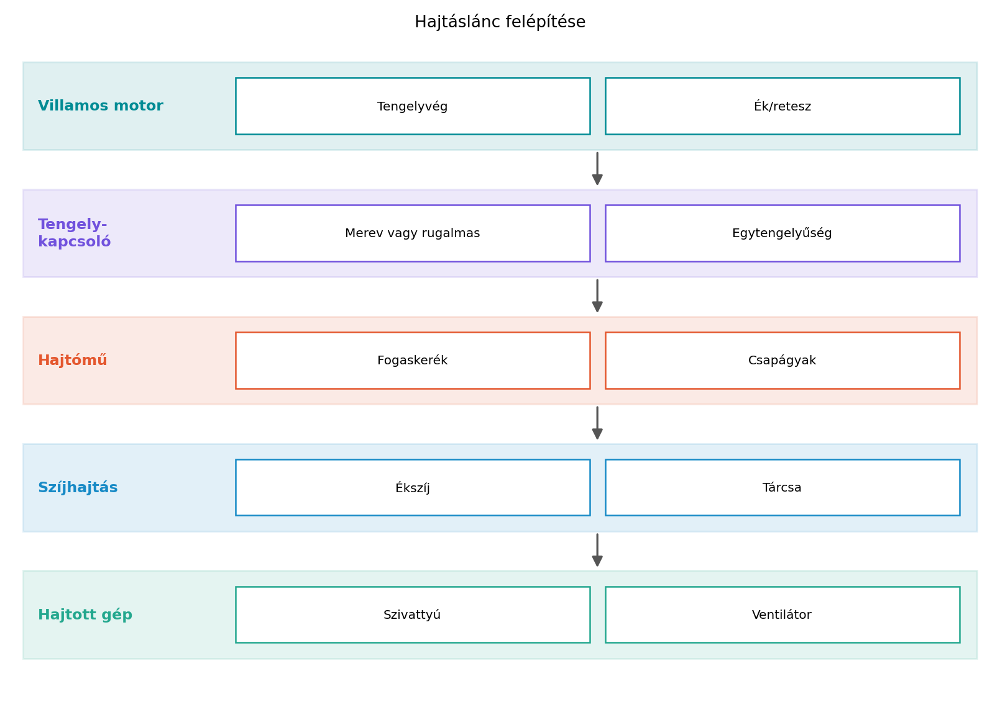

Statikus változat (mint a PDF-ben)
Egy ipari szivattyúnál a motor csapágycseréje után a szerelő visszarakta a tengelykapcsolót, de a próbajáraton a berendezés erősen rezeg, a gumi tengelykapcsoló-betét pedig szemmel láthatóan kopik. A villanyszerelő feladata nem ér véget a motor kábeleinek bekötésével: ahhoz, hogy a hajtás hosszú távon üzemeljen, a motor és a hajtott gép közötti mechanikai kapcsolatot is ismernie kell. Ez az alfejezet a villamos motorokhoz kapcsolódó gépelemek – tengelykapcsoló, csapágy, szíjhajtás, fogaskerék – szerepét, beállítását és ellenőrzését tanítja meg.
Biztonsági korlát. A gyakorlati útmutatók tanműhelyi környezetre vagy jogosult oktató felügyeletére vonatkoznak; hálózati feszültségen önállóan ne dolgozz.

A fenti ábra a tipikus ipari hajtásláncot mutatja: a motor tengelye a tengelykapcsolón keresztül adja át a nyomatékot a hajtóműnek, a hajtómű kimenő tengelye pedig ékszíjjal vagy közvetlenül hajtja a munkagépet. A fejezetben ezeknek az elemeknek a szerelését, beállítását és hibakeresését járjuk körül.
Definíció. A tengelykapcsoló két, egytengelyű (vagy kis szögeltérésű) tengely összekapcsolására szolgáló gépelem, amely a forgatónyomatékot a hajtó tengelyről a hajtott tengelyre viszi át, miközben lehetővé teheti a két tengely közötti kisebb szerelési hibák kiegyenlítését vagy az oldható kapcsolatot.
A tengelykapcsoló két fő csoportja:
Merev tengelykapcsoló: a két tengelyvéget mereven, játék nélkül köti össze, így a szerelési hibákat nem tudja kiegyenlíteni. Ilyen például a tárcsás tengelykapcsoló (a két tárcsát csavarokkal fogjuk össze). Csak pontosan beállított tengelyeknél használható, mert minden eltérés a csapágyakat és a tengelyt terheli.
Rugalmas (kiegyenlítő) tengelykapcsoló: rugalmas betéttel (gumi, műanyag) vagy rugóval rendelkezik, amely elnyeli a kisebb szög- és párhuzamossági hibákat, valamint csillapítja a lökésszerű terhelést. Ilyen például a karmos tengelykapcsoló (a két fél közé rugalmas gumicsillag kerül) vagy a Hardy-tárcsás tengelykapcsoló (rugalmas tárcsa).
Az alábbi ábra a két leggyakoribb típus felépítését mutatja. A merev tárcsás tengelykapcsolónál (a) mindkét tengelyvégre (1) retesszel egy-egy tárcsás agy (2) kerül; a két tárcsát a központosító perem (3) illeszti egymáshoz, a kötőcsavarok (4) pedig mereven összefogják. A rugalmas karmos tengelykapcsolónál (b–d) a két karmos agy (5) karmai a rugalmas gumicsillag (6) ágai közé nyúlnak, az agyakat hernyócsavar (7) rögzíti a tengelyen, és a két agy között a gyártó által előírt axiális hézag (8) marad.
Figyeld meg, hogy a központosító perem csak a két tárcsát igazítja egymáshoz; a két tengely egytengelyűségét nem állítja be, azt a motor helyzetével kell elérni. A rugalmas betét a kis hibát elviseli, de a beállítást nem pótolja: a gyorsan kopó, morzsolódó gumicsillag rendszerint rossz beállításra utal. A HTML-kiadásban a részekre mutatva megjelenik a feladatuk.
A tengelykapcsoló beállításának legfontosabb követelménye az egytengelyűség: a hajtó és a hajtott tengely középvonala egybe kell, hogy essen. Ennek három összetevője van:
Az alábbi ábra felső sora erősen túlozva mutatja a három eltérést: a párhuzamos eltolást (a, δ), a szögeltérést (b, α) és a nem megfelelő axiális hézagot (c, s). Az alsó sor a gyors ellenőrzés eszközeit mutatja: a magasabb palástra fektetett acélvonalzó alatt a másik félen fényrés látszik, ennek nagyságát hézagmérővel becsüljük (d); a homlokrést fent és lent hézagmérővel mérve a különbség a szöghibát jelzi (e); a lézeres tengelybeállító két mérőfeje mindkét síkban kiírja az eltolást és a szöghibát (f).
A vonalzós ellenőrzés gyors, de csak a durva hibát mutatja ki; a tűréshez (néhány század mm) mérőóra vagy lézeres beállító kell (lásd alább a mérőórás mérést). Mindegyik mérés leválasztott, lezárt hajtáson, kézzel forgatott tengellyel történik. A HTML-kiadásban az ábra panelenként, magyarázattal lejátszható.
Szabály. A tengelykapcsoló beállítását úgy kell elvégezni, hogy a radiális eltérés és a szögeltérés a gyártó által megadott tűrésen belül legyen. A tűrés jellemzően néhány század milliméter (pl. 0,05 mm) radiális eltérésnél, és a tengelykapcsoló gyártójának katalógusából veendő (ellenőrizendő: gyártói adatlap).
Mérés mérőórával. Az egytengelyűséget leggyakrabban mérőórával (század mm-es pontosságú mérőműszer) és mágneses állvánnyal ellenőrizzük. A mérőórát az egyik tengelykapcsoló-félre rögzítjük, a mérőcsúcsot pedig a másik fél kerületére (radiális mérés) vagy homlokfelületére (axiális mérés) helyezzük. A tengelyt lassan körbeforgatva a mérőóra kitérése megmutatja az eltérést. A mérési pontokat feljegyezzük, és a motor lábainál alátétlemezekkel, illetve a motor eltolásával korrigálunk.
A következő ábra a palástmérést mutatja az 5. feladat adataival. A mérőóra a motor tengelykapcsoló-felén van, a csúcsa a szivattyú-fél palástján; 0°-on (felül) nullázzuk, majd a két tengelyt együtt 90°-onként elforgatva leolvasunk: 0,00 / +0,06 / +0,18 / +0,12 mm. Az ellenőrző összeg () egyezik, tehát a mérés érvényes. A tengelyek eltolódása a teljes kifutás (TIR) fele: függőlegesen mm, ezt alátétlemezekkel korrigáljuk; vízszintesen (90°-os mínusz 270°-os leolvasás) mm, ezt a motor oldaltolásával. A homlokmérés (csúcs a homloklapon) a szöghibát mutatja. A HTML-kiadásban a mérés lépésenként lejátszható, és saját eltolódással új mérés indítható.
Számítás. Ha a mérőóra a teljes körülfordulás alatt 0,12 mm-t mutat, akkor a teljes kifutás (TIR) 0,12 mm. A tengelyek eltolódása ennek fele: 0,06 mm. Ha a megengedett eltolódás 0,05 mm (ellenőrizendő: a gyártói tűrés eltolódásra vagy TIR-re vonatkozik; adatlapból olvasandó), a beállítás nem megfelelő, és a függőleges hibát alátéttel, a vízszintest a motor oldalirányú eltolásával kell korrigálni.
Definíció. A csapágy a forgó tengelyek megtámasztására és a fellépő erők felvételére szolgáló gépelem, amely lehetővé teszi a tengely kis súrlódású forgását. A gördülőcsapágy gördülőelemek (golyó vagy görgő) segítségével csökkenti a súrlódást, szemben a csúszócsapággyal, ahol a tengelycsap közvetlenül a csapágy anyagában forog.
A leggyakoribb gördülőcsapágy típusok:
Csapágyjelölés. A gördülőcsapágyak jelölése szabványos, általában 3–5 számjegyből áll. Például a 6205 jelölésű csapágy:
Így a 6205 csapágy furata 25 mm, típusa mélyhornyú golyóscsapágy.
A gördülőcsapágy részeit az alábbi ábra mutatja: a külső gyűrű (1) a csapágyházban (pajzsban), a belső gyűrű (2) a tengelyen ül; a kettő futópályáján (6) gördülnek a golyók (3), amelyeket a kosár (4) tart egyenletes osztásban; a zárt csapágyat kétoldalt tömítés vagy fedőlemez (5) védi. Az ábra alsó sora a négy típus félmetszetét mutatja: a nyilak vastagsága jelzi, mekkora radiális (Fr) és axiális (Fa) erőt vesz fel az adott típus.

A fel- és leszerelésnél az a döntő, melyik gyűrű ül szorosan: a tengelyen ülő csapágynál az erőt mindig a belső gyűrűre kell vinni, a golyókon át soha. A jelölés utótagjai (például a tömítés jele) gyártónként eltérhetnek, ezért cserénél a teljes jelölést a katalógussal egyeztesd. A HTML-kiadásban a részekre és a típusokra mutatva olvasható a rövid leírásuk.
Kenés. A gördülőcsapágyak üzemi hőmérsékletét és élettartamát a megfelelő kenés biztosítja. A leggyakoribb a zsírkenés, ritkábban az olajkenés. A kenőzsír mennyiségére vonatkozóan a gyakorlatban irányérték, hogy a csapágyház üres térfogatának kb. 30–50%-a legyen a zsír (ellenőrizendő: gyártói előírás). A túl sok zsír éppúgy káros, mint a túl kevés: a keveredési ellenállás miatt a csapágy melegszik. A kenési periódus a fordulatszámtól, a terheléstől és a környezettől függ, lásd a gyártói katalógust.
Állapotellenőrzés. A csapágy állapotát elsősorban az alábbi jelekből ítélhetjük meg:
Figyelem. A csapágy cseréjekor a csapágyat csak a megfelelő szerszámokkal, a belső vagy külső gyűrűre ható egyenletes erővel szabad felszerelni. A golyósorra vagy a görgőkre közvetlenül ütni tilos; ez a csapágy azonnali tönkremenetelét okozhatja.
Definíció. A szíjhajtás két vagy több tengely közötti erőátvitelt valósít meg rugalmas szíj és tárcsák segítségével. A szíj a tárcsák hornyában helyezkedik el, és a súrlódás vagy fogazat révén továbbítja a nyomatékot.
Szíjhajtás típusok:
Áttétel számítása. A szíjhajtás áttétele – jó közelítéssel, a szíj csúszását elhanyagolva – a tárcsaátmérők arányával egyenlő:
ahol: - : a hajtó tárcsa fordulatszáma (1/min), - : a hajtott tárcsa fordulatszáma (1/min), - : a hajtó tárcsa átmérője (mm), - : a hajtott tárcsa átmérője (mm).
Példa (szíjhajtás áttétel). Egy villanymotor fordulatszáma , a hajtott szivattyú tengelyéé . Mekkora a hajtott tárcsa átmérője, ha a motor tárcsa ?
Megoldás. Először az áttételt számítjuk:
Az áttétel a tárcsaátmérők aránya is: , ezért
Ellenőrzés. Ha a hajtott tárcsa átmérője 240 mm, akkor a kerületi sebesség mindkét tárcsán azonos (a szíj csúszás nélkül): , és a hajtott oldalon ; a két érték egyezik, a számítás helyes.
Szíjfeszítés ellenőrzése. Az ékszíj feszítését a gyakorlatban a lehajlás mérésével ellenőrizzük. A szíj közepén, a két tárcsa között, meghatározott erővel (pl. 10 N) nyomva a szíj lehajlását mérővonalzóval vagy speciális feszültségmérővel mérjük. Az ideális lehajlás a tengelytávolság függvényében jellemzően méterenként 10–15 mm (ellenőrizendő: gyártói táblázat). A túl feszes szíj túlterheli a csapágyakat, a túl laza szíj pedig csúszik, melegszik és idő előtt kopik. Emellett a tárcsáknak párhuzamosnak kell lenniük; ezt párhuzamossági vonalzóval vagy lézeres tárcsabeállítóval ellenőrizzük.
Az alábbi ábra (a) része a behajlásmérést mutatja: a feszes ág közepén a feszítésmérővel F erővel (pl. 10 N) nyomjuk a szíjat, és a két tárcsára fektetett vonalzóhoz (szaggatott vonal) képest mérjük az s behajlást; t a tengelytáv. A fejezet irányértékével egy 0,6 m-es tengelytávnál s ≈ 6–9 mm, de a pontos erőt és behajlást a szíj gyártójának táblázata adja. A (b)–(d) felülnézetek a tárcsák egysíkúságát mutatják: helyes esetben a homlokokra fektetett vonalzó négy ponton felfekszik (b), eltolásnál rés látszik a hajtott tárcsánál (c), szöghibánál ék alakú rés (d).
A mérés és az állítás csak leválasztott, lezárt hajtáson végezhető, a szíjvédő burkolatot a munka végén vissza kell szerelni. Új szíjnál a feszítést néhány üzemóra után ismételten ellenőrizni szokás, mert a szíj megnyúlik (ellenőrizendő: szíjgyártói ajánlás). A HTML-kiadásban az ábra négy képe egyenként, magyarázattal megnézhető.
Definíció. A fogaskerék-hajtómű két vagy több fogaskerék segítségével csökkenti (vagy növeli) a fordulatszámot, miközben a nyomatékot áttételezi. A hajtómű a hajtáslánc fontos eleme, mert a villamos motorok jellemzően nagy fordulatszámon adják le a névleges nyomatékot, míg a munkagépek (szállítószalag, keverő, szivattyú) gyakran kisebb fordulatszámot igényelnek.
A leggyakoribb fogaskerék-típusok:
Áttétel számítása. Fogaskerék-hajtóműnél az áttétel a fogszámok arányával egyenlő:
ahol a hajtó kerék fogszáma, a hajtott kerék fogszáma.
Példa (fogaskerék áttétel). Egy motor fordulatszáma , a hajtó fogaskerék fogszáma , a hajtotté . Mekkora a kimenő fordulatszám és az áttétel? Mekkora a kimenő nyomaték, ha a bemenő nyomaték , és a hajtómű hatásfokát ideálisnak () tekintjük?
Megoldás. Az áttétel:
A kimenő fordulatszám:
Ideális esetben a bemenő és kimenő teljesítmény egyenlő (), ezért . Mivel , a nyomaték:
Ellenőrzés. A bemenő oldalon , a kimenő oldalon . A bemenő teljesítmény , a kimenő ; a teljesítmény-mérleg stimmel.
Fogaskerék beállítás és kenés. A fogaskerekek foglalkozásánál ellenőrizni kell a foghézagot: a fogak közötti játékot, amely a kenőanyag film kialakulását és a hőtágulást teszi lehetővé. A túl nagy foghézag zajt és lökést okoz, a túl kicsi pedig beszoruláshoz, melegedéshez vezet. A hajtómű kenésére általában olajat használnak; a szintet olajszint-ellenőrző üvegen vagy nívópálcán ellenőrizzük, a csereperiódus a gyártó előírása szerint történik.
A hajtástechnikai szerelés során gyakran kell mechanikai méreteket felvenni vagy ellenőrizni. A villanyszerelőnek ismernie kell az alapvető mérőeszközöket:
Példa méretfelvételre. Egy villanymotor tengelyvégére új tengelykapcsoló-fél kerül. A tengelycsap átmérőjét mikrométerrel mérjük: 38,02 mm. A feladathoz 38 mm-es furatú tengelykapcsoló-fél szükséges, mert a reteszhorony és a csap illesztése a gyártói táblázat szerint H7 illesztést feltételez (ellenőrizendő: gyártói adat). A reteszhorony szélességét tolómérővel ellenőrizzük, a reteszt pedig próbaillesztéssel nézzük meg, mert a retesznek pontosan illeszkednie kell, különben a tengelykapcsoló a tengelyen elfordulhat.
Szabály. A méretfelvétel előtt a mérendő felületet meg kell tisztítani, a mérőeszközt nullázni kell, és a mérést legalább kétszer meg kell ismételni. Az eredményt mindig a mérési pontatlanság figyelembevételével kell értékelni.
Valós eset (hibakeresés). Egy ipari szivattyúnál a motor cseréje után a berendezés erős rezgéssel járt, és a rugalmas tengelykapcsoló gumibetétje rövid idő alatt elkopott. A szerelő először a motor csapágyaira gyanakodott, de a lekapcsolt motor kézzel történő forgatása sima volt, a csapágyak hűvösek voltak.
Hipotézis. A tengelykapcsoló rossz egytengelyűsége okozza a rezgést és a gumibetét gyors kopását.
Mérés. A szerelő mérőórát rögzített a motor tengelykapcsoló-felére, a mérőcsúcsot a szivattyú oldali félre. A tengely körbeforgatásakor a mérőóra teljes kitérése 0,18 mm volt, azaz a tengelyek eltolódása kb. 0,09 mm, ami meghaladta a gyártó által megengedett 0,05 mm-t (ellenőrizendő: a tűrés eltolódásra vagy TIR-re vonatkozik).
Ok. A motort a cseréje után rosszul állították be: a hátsó motorlábak alól hiányzott az alátétlemez, ezért a motor tengelye alacsonyabban állt a szivattyúénál (párhuzamos eltolódás; a palástméréssel kimutatott 0,09 mm-es eltolódás mellett a homlokmérés kis szöghibát is jelezhet).
Javítás. A motort leállították, feszültségmentesítették, majd a motor lábai alá állítható alátétlemezeket helyeztek. A mérőórás beállítást addig finomították, amíg a radiális eltérés 0,03 mm-re csökkent. Ezután a csavarokat előírt nyomatékkal meghúzták.
Megelőzés. Tervszerű karbantartásnál a tengelykapcsoló egytengelyűségét minden motorcsere után mérőórával ellenőrizni kell, és a beállítási jegyzőkönyvet el kell készíteni.
Továbbvitt eredmény. A tengelykapcsoló beállítása, a csapágyak kiszerelése és a szíjfeszítés szerelési ismerete közvetlenül hasznosul a Gépek megbontása, javítása és üzembe helyezése alfejezetben, amikor a motorokat és hajtóműveket szétbontjuk, a csapágyakat cseréljük, és a hajtást újra szereljük.
Cél: A motor és a szivattyú tengelyeinek egytengelyűvé tétele, a rezgések és a tengelykapcsoló-kopás megelőzése.
Eszközök és anyagok: mérőóra mágneses állvánnyal, hézagmérő, alátétlemez-készlet, villáskulcsok, nyomatékkulcs, tolómérő, csavarlazító- és tisztítóanyag, rongy.
Biztonsági korlát. A feladat tanműhelyi környezetre vagy jogosult oktató felügyeletére vonatkozik; hálózati feszültségen önállóan ne végezd. Minden szerelési lépés előtt a motor feszültségmentes legyen.
Eljárás.
Lekapcsolás: Kapcsold le a hajtást a főkapcsolóval, és győződj meg róla, hogy a motor nem indulhat el.
Visszakapcsolás elleni biztosítás: Zárd le a kapcsolót, helyezz rá figyelmeztető táblát.
Feszültségmentesség ellenőrzése: kétpólusú feszültségvizsgálóval (MSZ EN 61243-3; megfelelő CAT-besorolás) a motor kapcsain minden fázis között (L1–L2, L2–L3, L3–L1) és minden fázis és a PE között; a vizsgálót a mérés előtt és után ismert feszültségforráson ellenőrizd. Frekvenciaváltós hajtásnál előbb várd ki a gyártó által megadott kisütési időt (ellenőrizendő: gyártói adat).
Földelés és rövidre zárás: Ha a technológia megköveteli, földeld és rövidre zárd a motor kapcsait.
Szomszédos feszültség alatti részek lefedése: Ha a közelben feszültség alatti berendezés van, fedd le vagy kerítsd el.
Előkészítés: Tisztítsd meg a tengelykapcsoló-feleket és a motor lábazatát. Győződj meg arról, hogy a motor talpcsavarjai kézzel állíthatók, de a motor ne tudjon elfordulni.
Mérőóra felszerelése: Rögzítsd a mérőórát az egyik tengelykapcsoló-félre (pl. a motor oldalira), a mérőcsúcsot érintsd a másik fél kerületéhez radiális méréshez, vagy a homlokfelülethez axiális méréshez. Nullázd a mérőórát.
Mérés: Forgassd a tengelyt lassan, kézzel. Jegyezd fel a mérőóra kitérését a 0°, 90°, 180° és 270° pozíciókban. A legnagyobb és legkisebb érték különbsége adja a teljes kifutást.
Kiértékelés: Számítsd ki az eltolódást (a függőleges síkban , a vízszintesben ), és hasonlítsd össze a gyártó által megengedett tűréssel (pl. 0,05 mm; ellenőrizd, hogy a gyártói tűrés eltolódásra vagy TIR-re vonatkozik-e). Ha az eltolódás nagyobb, folytasd a beállítást.
Beállítás: A függőleges síkú hibát (eltolódást és szöghibát egyaránt) a motorlábak alá helyezett alátétlemezekkel, a vízszintes síkút a motor oldalirányú eltolásával korrigáld; mindkét síkban a homlokmérés (szöghiba) és a palástmérés (eltolódás) alapján. Minden módosítás után ismételd meg a mérést.
Axiális hézag ellenőrzése: Hézagmérővel ellenőrizd a tengelykapcsoló-felek közötti hézagot; ennek meg kell felelnie a gyártói előírásnak.
Meghúzás: Ha a mérési eredmény a tűrésen belül van, húzd meg a motor talpcsavarjait nyomatékkulccsal a gyártói előírt nyomatékkal.
Visszaállítás: távolítsd el a mérőórát és a szerszámokat, szereld vissza a tengelykapcsoló védőburkolatát (forgó alkatrész: becsípődés- és behúzásveszély), szüntesd meg a földelést és rövidre zárást; a saját lakatodat te veszed le, a feszültség alá helyezést a jogosult személy végzi.
Próbajárat: a technológia szerint (szivattyúnál feltöltött állapotban, szárazfutás nélkül, mert az a tömítést károsítja), rezgés-, zaj- és csapágyhőmérséklet-ellenőrzéssel.
A 7–10. lépés mérését és kiértékelését a „Tengelykapcsolók” szakasz mérőórás ábrája mutatja (négy pozíció, ellenőrző összeg, eltolódás = TIR/2).
Ellenőrzési pontok: az eltolódás (TIR/2) mindkét síkban a gyártói tűrésen belül (pl. ≤ 0,05 mm); a tengelykapcsoló hézag a gyártói tűrésen belül; a talpcsavarok nyomatéka megfelelő; a próbajáraton nincs rendellenes zaj vagy rezgés.
Dokumentálás: rögzítsd a mérési értékeket a karbantartási naplóban, és töltsd ki a beállítási jegyzőkönyvet.
Túlfeszített ékszíj. A szerelő azért feszíti meg a szíjat, hogy ne csússzon, de a túlzott feszítés túlterheli a motor és a hajtott gép csapágyait, ami csapágy melegedéshez és idő előtti tönkremenetelhez vezet. Helyes gyakorlat: a lehajlás mérésével, a gyártói táblázat szerint feszíteni.
Rossz egytengelyűségű tengelykapcsoló. A motor cseréjekor a tengelykapcsolót nem állítják be, így a radiális vagy szöghiba megnöveli a csapágyterhelést és a rezgést, a rugalmas betét gyorsan kopik. Helyes gyakorlat: minden szerelés után mérőórával ellenőrizni, és a motort alátétlemezekkel beállítani.
Csapágy túlzsírozása. A szerelő a biztonság kedvéért sok zsírt nyom a csapágyházba, ami a keveredési ellenállás miatt a csapágy túlmelegedését okozza. Helyes gyakorlat: a gyártói előírt mennyiséget (jellemzően a csapágyház térfogatának 30–50%-a) betartani.
Csapágy melegedésének figyelmen kívül hagyása. A próbajáraton a csapágy melegszik, de a szerelő „majd bejáratódik” alapon továbbüzemelteti a gépet, ami csapágy leálláshoz, tengelykárosodáshoz vezet. Helyes gyakorlat: a melegedés pontos okát azonnal ki kell vizsgálni (kenés, túlterhelés, rossz beállítás).
Igaz vagy hamis? A merev tengelykapcsoló
kiegyenlíti a kisebb tengelyhibákat.
Indokold.
Gyors számolás. Egy ékszíjas hajtásnál a motor tárcsa átmérője 100 mm, a hajtott tárcsáé 300 mm. Mekkora az áttétel, és hány 1/min a hajtott fordulatszám, ha a motor 1450 1/min fordulatszámon jár?
Rajzolvasás. Mit jelent a 6205 csapágyjelölés? Mekkora a furat?
Mi a hiba ebben a kapcsolásban? (Mechanikai értelemben:) A motor és a szivattyú tengelye közötti rugalmas tengelykapcsoló két fele közötti radiális eltérés 0,3 mm. A gyártó megengedett tűrése 0,05 mm. Mi a következmény, és mit kell tenni?
Fogaskerék áttétel. Hajtó fogaskerék 20 fog, hajtott 80 fog. Mekkora az áttétel, és mennyi a kimenő fordulatszám, ha a bemenő 1200 1/min?
A válaszokat a Megoldások szakasz elején, az „Önellenőrzés – válaszok” alcím alatt találod.
1. feladat (A). Sorolj fel legalább három tengelykapcsoló típust, és röviden jellemezd őket.
2. feladat (A). Egy csapágy jelölése 6304. Mit jelent a 6-os, a 3-as és a 04? Számítsd ki a furatátmérőt.
3. feladat (B). Ékszíjas hajtásnál a hajtó tárcsa átmérője 140 mm, a hajtotté 350 mm. A motor fordulatszáma 1440 1/min. Számítsd ki az áttételt és a hajtott fordulatszámot. Ellenőrizd az eredményt a kerületi sebesség egyenlőségével.
4. feladat (B). Fogaskerék-hajtómű hajtó kereke 25 fogú, a hajtott 100 fogú. A bemenő fordulatszám 1000 1/min, a bemenő nyomaték 15 N·m, a hatásfok 90%. Számítsd ki a kimenő fordulatszámot, az ideális nyomatékot, és a tényleges kimenő nyomatékot.
5. feladat (C). Egy motor–szivattyú tengelykapcsoló beállításánál a mérőóra mérési eredményei a következők (radiális kitérés 0°-nál 0,00 mm, 90°-nál +0,06 mm, 180°-nál +0,18 mm, 270°-nál +0,12 mm). A gyártói tűrés 0,05 mm. Milyen irányú beállításra van szükség? Magyarázd el, hogyan korrigálnád a motor helyzetét.
6. feladat (D). Hibakereső feladat: Egy ékszíjas hajtású ventilátor csapágya melegszik, a szíj hajlamos csúszni, és a tárcsa oldala fényesre kopott. Milyen három dolgot vizsgálnál meg először, és milyen méréseket végeznél? Vázold a hibakeresés lépéseit.
Önellenőrzés – válaszok
Hamis. A merev tengelykapcsoló nem tud kiegyenlíteni semmilyen hibát, mert a két tengelyvéget mereven köti össze. A kiegyenlítésre a rugalmas tengelykapcsoló alkalmas.
Az áttétel . A hajtott fordulatszám .
6205: 6 = mélyhornyú golyóscsapágy, 2 = átmérősorozat (könnyű), 05 = furat .
A 0,3 mm radiális eltérés hatszorosa a megengedett 0,05 mm-nek. Ez a tengelykapcsoló rugalmas elemének gyors kopásához, rezgéshez, és a csapágyak túlterheléséhez vezet. A motort oldalirányban el kell tolni, és/vagy alátétlemezekkel beállítani, majd mérőórával ellenőrizni.
Áttétel , kimenő fordulatszám .
1. feladat megoldása (A).
Például:
- Merev tárcsás tengelykapcsoló: pontos
egytengelyűséget igényel, nincs kiegyenlítés.
- Karmos (rugalmas) tengelykapcsoló: a két fél közé
gumicsillag kerül, kisebb tengelyhibákat kiegyenlít.
- Hardy-tárcsás tengelykapcsoló: rugalmas tárcsa köt
össze két fél; szintén kiegyenlítő.
2. feladat megoldása (A).
6304: az első számjegy 6 → mélyhornyú golyóscsapágy. A második 3 →
átmérősorozat (középnehéz). Az utolsó két számjegy 04 → furat
.
3. feladat megoldása (B).
Áttétel:
.
Hajtott fordulatszám:
.
Ellenőrzés kerületi sebességgel:
,
.
.
.
A sebességek egyeznek, az eredmény helyes.
4. feladat megoldása (B).
Áttétel:
.
Kimenő fordulatszám:
.
Ideális nyomaték:
.
Hatásfokkal:
,
így
.
5. feladat megoldása (C).
A radiális eltérések 0°-nál 0,00 mm, 90°-nál +0,06 mm, 180°-nál +0,18
mm, 270°-nál +0,12 mm. A teljes kifutás
(a maximális és minimális érték különbsége, TIR). A tengelyek tényleges
eltolódása ennek fele. Ha a 0° a felső helyzet: a függőleges eltolódás
,
ezt a motorlábak alatti alátétlemezek változtatásával kell korrigálni; a
vízszintes eltolódás (a 90°-os és a 270°-os leolvasás különbségének
fele)
;
ez tűrésen belül van, oldaltolással finomítható. Az eltolódás irányát
(előjelét) a mérőóra felszerelési oldala határozza meg, ezért a
korrekció irányát ebből kell megállapítani. A korrekció után a mérést
meg kell ismételni.
6. feladat megoldása (D).
Hibakeresési lépések:
1. Szíjfeszítés ellenőrzése: lehajlásmérés a szíj
közepén; ha túl laza, a szíj csúszik, melegszik, a tárcsa oldala
fényesre kopik. A feszítést a gyártói táblázat szerint kell
beállítani.
2. Tárcsák párhuzamossága: párhuzamossági vonalzóval
vagy lézerrel ellenőrizni, mert a nem párhuzamos tárcsák oldalirányú
kopást és melegedést okoznak.
3. Csapágy állapota: a hajtott oldali csapágy
hőmérsékletét, zaját, rezgését megvizsgálni. Ha a csapágy túlterhelt a
túl feszes szíj vagy a rossz beállítás miatt, akkor a hiba okát meg kell
szüntetni, nem elég a csapágyat cserélni.
Eljárás összefoglalva: feszítés ellenőrzés → tárcsabeállítás → csapágyellenőrzés → korrekció → próbajárat → ellenőrző mérés.
A hajtástechnikai gépelemek a villamos motor és a munkagép közötti mechanikai kapcsolatot biztosítják. A tengelykapcsoló lehet merev vagy rugalmas; a beállítás során az egytengelyűséget mérőórával ellenőrizzük, a megengedett eltérés jellemzően 0,05 mm (ellenőrizendő). A gördülőcsapágyak – golyós, görgős – jelölése szabványos, pl. a 6205 furata 25 mm. Kenésük zsírral vagy olajjal történik, a túlzsírozás éppoly káros, mint a kenéshiány. Az ékszíjhajtás áttétele a tárcsaátmérők arányával számolható: ; a szíj feszítését lehajlásméréssel ellenőrizzük. A fogaskerék-hajtómű áttétele , a nyomaték pedig -szeresére nő ideális esetben. A motor–gép hajtás szerelésekor a tengelykapcsoló beállítás, a csapágyállapot és a szíjfeszítés egyaránt kritikus. Továbbvitt eredmény. Ezek az ismeretek elengedhetetlenek a gépek megbontásához és javításához a Gépek megbontása, javítása és üzembe helyezése alfejezetben, ahol a csapágyak kiszerelése, a hajtás szétszerelése és összeszerelése történik.
A fejezetben hivatkozott szabványok, tűrések, kenőanyag-mennyiségek, csapágyjelölések és szíjfeszítési értékek a mindenkori gyártói katalógusok és a hatályos szabványok szerint ellenőrizendők. Nem adtunk meg konkrét szabványszámot, mert az ISO-csapágyjelölés és a gyártói adatok időben változhatnak; a megadott értékek (0,05 mm tűrés, 30–50% zsírkitöltés, 10–15 mm/m lehajlás) tanulási példák, nem tervezési előírások. A gyakorlati útmutatóban szereplő nyomatékok és tűrések a konkrét berendezés gépkönyvéből és a gyártó utasításából veendők.